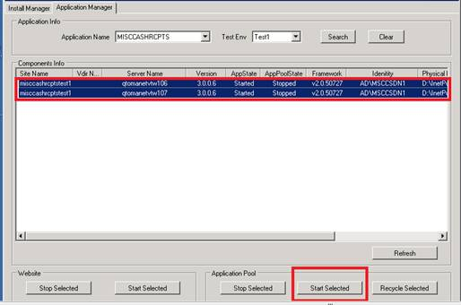

DOTNET Install Manager Bounce Process
- Log into ETS portal http://et.dev.qintra.com/stsclient/Login.aspx; assign ticket, update status In-Progress
- Log into the 2019 stager usomawvdntst01.test.intranet
Navigate to D:\Inetpub\AdminScripts\DotNetInstallManager_Win2019
Right click on DotNetInstallManager.exe and run as administrator
- Click Application Manager Tab and then use the scroll bars to locate the application name and Test Env and then click Search button
- Select all the sitenames and click on Stop selected on both Application Pool and Website.
- Click refresh button to make sure everything is stopped
- Select all the site names agian and click on start selected on both Application Pool and Website.
- Make sure that all the sites are started.

IIS Stop/Start process
- log on to each application server and Click Start and then Internet Information Services (IIS) Manager
- Click on Application Pools on the left and highlight that name you want in the middle panel.
- Click start on the right hand side and make sure application is running.
Click Stop on the right hand side.